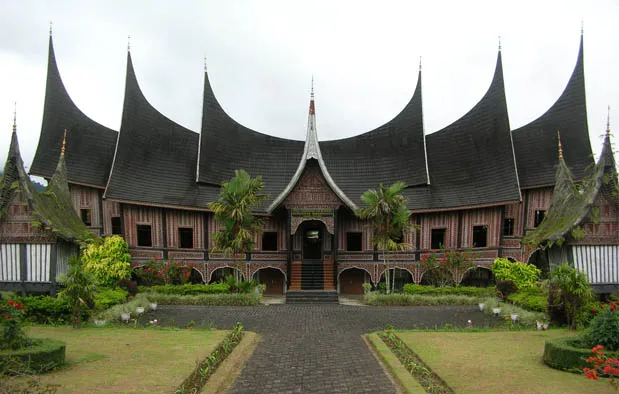
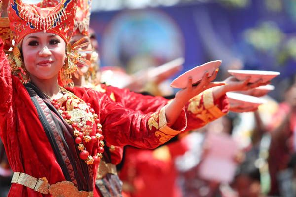

Sejarah

Sejarah bermula pada masa nkerajaan Adityawarman, yang merupakan tokoh penting Minangkabau. Seorang Raja yang tidak ingin disebut sebagai Raja, pernah memerintah di Pagaruyuang, daerah pusatkerajaan Minangkabau, selain itu beliau juga orang pertama yang memperkenalkan sistim kerajaan di Sumatera Barat.
Sejak Pemerintah Raja Adityawarman tepatnya pertengahan abad ke 17, Propinsi ini lebih terbuka dengan dunia luar khususnya Aceh. Karena hubungan dengan Aceh yang semakin intensif melalui kegiatan ekonomi masyarakat, akhirnya mulai berkembang nilai baru yang menjadi landasan sosial budaya masyarakat Sumatera Barat.
Melirik sejarah singkat Minangkabau, merupakan salah satu desa yang berada dikawasan Kecamatan Sungayang, Tanah Datar, Sumatera Barat. Desa tersebut awalnya merupakan tanah lapang. Namun karena adanya isu yang berkembang bahwa kerajan Pagaruyuang akan diserang kerajaan Majapahit dari daerah Jawa maka terjadilah peristiwa adu kerbau atas usul kedua belah pihak. Kerbau terebut mewakili perperangan kedua kerajaan. Karena kerbau Minang berhasil memenangkan perkelahian maka muncul kata manang kabau yang selanjutnya dijadikan nama Nagari atau desa tersebut.
Tradisi

Suku Minangkabau terdapat beberapa budaya yang berkaitan dengan keluarga bahkan tempat wisata. Tradisi tersebut yaitu sebagai berikut:
1. Turun Mandi
Upacara tradisional turun mandi merupakan upacara yang dilakukan sebagai suatu bentuk rasa syukur atas lahirnya anak ke dunia. Upacara ini juga dilakukan sebagai perkenalan anak ke masyarakat. Proses upacara ini didahului oleh acara arak-arakan. Kemudian turun mandi dilakukan di sungai.
2. Balimau
Kegiatan balimau dilakukan di sungai atau lubuak. Dilakukan ramai-ramai. Selain sebagai penanda bahwa Ramadhan akan tiba, tradisi ini juga tanda untuk menyucikan batin dengan cara memaafkan satu dengan yang lainnya.
3. Makan Bajamba
Tradisi ini merupakan acara makan di tempat tertentu dan biasanya dilakukan saat hari besar islam ataupun ketika acara penting lainnya. Menurut sejarah, tradisi makan secara bersama-sama ini diperkirakan masuk ke Sumatera Barat di abad ke-7.
4. Batagak Pengulu
Di Minang, masyarakat hidup dalam budaya berkaum atau bersuku. Masing-masing suku tersebut memiliki penghulu suku yang disebut dengan datuak. Jadi, ketika suku atau kaum tertentu mengangkat suatu pemimpin atau datuak, maka dilakukan upacara batagak pangulu. Dalam pelaksanaannya, upacara ini diadakan selama 3-7 hari.
5. Pacu Jawi
Tradisi pacu jawi hampir sama dengan karapan sapi yang ada di Madura namun tradisi ini dilakukan di sawah yang basah dan berlumpur. Jadi tidak heran bila joki dan sapi akan penuh lumpur.
Pahlawan

H. Agus Salim

Imam Bonjol

Rasuna Said

Sutan Syahrir

Tan Malaka
Sumatera Barat